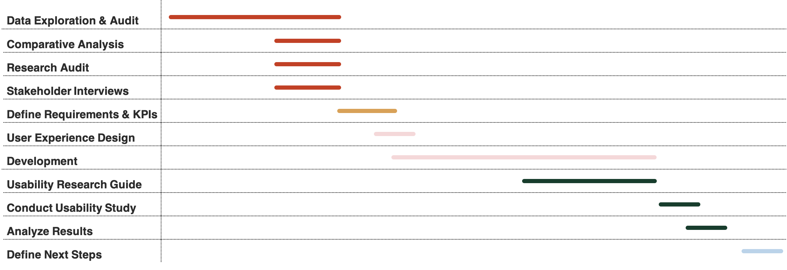

Product Manager Intern
Content & Personalization
I was responsible for working with a cross-functional team to create a more personalized experience within the app. My final deliverable was two-fold
- A demo of the feature
- Next steps based on from a usability study
Please note: due to an NDA I am unable to share deliverables or project specifics.
Project Cycle
Project Highlights
Background Research
Gained insight into the problem by auditing existing research, investigating data capabilities, and conducting my own research which included a comparative analysis and stakeholder interviews.
Requirements Documentation
Create a requirements document to share with stakeholders and project partners. The document included:
- Identified target users
- Established experiences and features and their priority level
- Partnered with Data Science to determine trackable KPIs and success criteria
- Determined key milestones and a project timeline
- Outlined potential dependencies and assumptions
Evaluation
I conducted a usability study to evaluate the effectiveness of the solution. I was responsible for managing the process end-to-end, which included:
- Developing research protocol, including: tasks, script, and questions
- Recruiting users
- Administering the usability study
- Distilling findings and sharing with stakeholders
Define Next Steps
Outlined immediate and long term next steps based on research findings and updated documentation to help the next PM continue working on the project